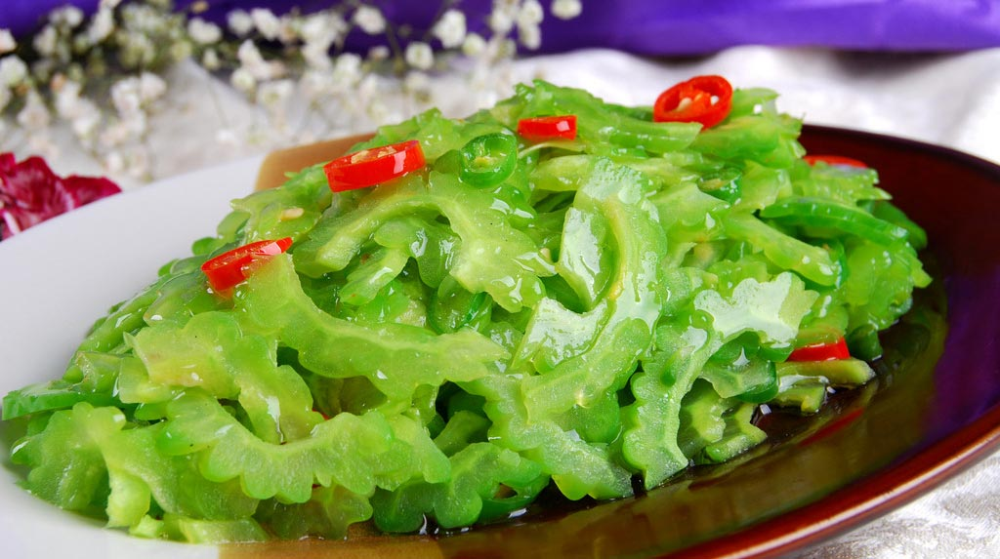
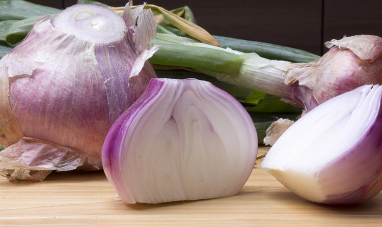

细数5种降糖蔬菜
对于糖友，饮食方面是应该特别注意，甚至每顿白饭米都得计量来吃。膳食专家称，马铃薯是宝，糖友适量吃马铃薯，对身体健康有很好的帮助。除了土豆，生活中哪些食物适合糖友食用?
1、苦瓜
味极苦，性寒，有清热解暑、清肝明目、解毒的功能。现代医学研究发现，苦瓜含苦瓜甙、5—羟色胺、谷氨酸、丙氨酸及维生素B1等成分。苦瓜的粗提取物有类似胰岛素的作用，能降低血糖，对糖尿病有良好的防治作用。
2、南瓜
味甘，性温，有补中益气、消炎止痛的功能。现代研究发现，南瓜能促进胰岛素的分泌，从而降低血糖。
3、洋葱
注意维生素的补充：多吃含有维生素的新鲜水果、蔬菜，如橙子、奇异果、苹果、包菜、苋菜、番茄等。
4、黑木耳
含木耳多糖、维生素、蛋白质、胡萝卜素和钾、钠、钙、铁等矿物质，其中木耳多糖有降糖效果。实验表明，木耳多糖可以降低糖尿病小鼠的血糖。黑木耳可炒菜或炖汤，也可作配料。
5、紫菜
含有丰富的紫菜多糖、蛋白质、脂肪、胡萝卜素、维生素等，其中的紫菜多糖能显著降低血糖。糖尿病患者可于饭前食用紫菜，以降低血糖。